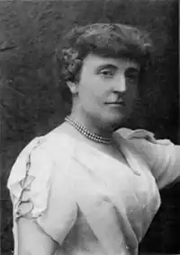
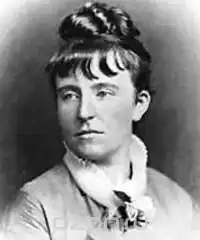

Френсіс Еліза Годґсон Бернет (англ. Frances Eliza Hodgson Burnett, 24 листопада 1849, Чітем Гілл, Манчестер, Англія — 29 жовтня 1924, Нью-Йорк, США) — англо-американська письменниця та драматург. Класик англійської дитячої літератури.
Френсіс Еліза Годґсон народилася 24 листопада 1849 року у Манчестері, Англія. Вона була третьою дитиною у сім'ї Елізи Бунд та Едвіна Годґсона, власника мануфактурної крамниці. Френсіс не виповнилося і чотирьох років, коли батько помер. Це завдало удару по добробуту сім'ї. До цього додалася економічна криза, яка на той час опанувала Манчестер. Мати якийсь час іще намагалася провадити крамницю сама, проте згодом прийняла запрошення свого брата, який мешкав у містечку Ноксвіл (штат Теннессі, США) і 1865 року разом з дітьми виїхала до Америки.
З дитинства Френсіс володіла здатністю розповідати різноманітні історії. Згодом вона стала їх записувати. Від 1868 року оповідання Френсіс Годґсон стали з'являтися друком у жіночих журналах. Молода письменниця відразу здобула читацькі симпатії. По смерті матері Френсіс фактично перебрала на себе утримання сім'ї: її гонорари стали основним джерелом існування для п'ятьох її братів і сестер. У вересні 1873 року Френсіс виходить заміж за Свена Бернета. У них народилося двоє синів – Лайонел і Вівіан. Синів із матір'ю поєднувало цілковите розуміння. Тому страшним ударом для Френсіс стала несподівана смерть старшого, Лайонела. Хлопець згорів від гострої форми туберкульозу, коли йому було п'ятнадцять років. У 1886 році з'явилася друком її роман для дітей "Маленький лорд Фонтлерой". Книга принесла нову популярність письменниці. Далі на підставі повісті було написано п'єсу, яку й поставили у театрі. Вистава тішилася величезним успіхом. Це й поклало початок новому напрямку творчости Френсіс Бернет. З середини 1890-тих Френсіс Еліза жила здебільшого в Англії, у 1905 році вона отримала американське громадянство та 1909 року переїхала до Сполучених Штатів назавжди. Френсіс Еліза Годґсон Бернет померла 29 жовтня 1924 року у Нью-Йорку. Письменниця була похована на кладовищі Рослін поруч з могилою її сина Вівіана. Коло могили стоїть пам'ятник її сину Лайонелу у натуральну величину. "Луїзіана" (1880) "Маленький лорд Фонтлерой" (1886) "Сара Кру або що відбулося з міс Мінчін" (1888), згодом переписаний як "Маленька принцеса" (1904) "У зачиненій кімнаті" (1904) "Земля блакитної квітки" (1904) "Таємний Сад" (1911) "Загублений принц" (1915)